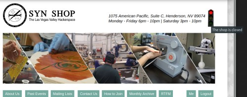

Traffic Light Admin Guide
For general end user info, see users guide. See the time-circuit repository on Github.
Otherwise, for nitty gritty technical info, read on!
Acquiring
Where did we get this? How do we get another if ours explodes? Exercise left to reader.
Lights
Lights are Lights are A19 LED 14w (100w equivalent). You can swing the front of the fixture open to replace them when they go out.
Controller Box
Krux to fill in info here, but
- ESP32
- Screen
- Buttons
- Relay
Case
Krux to fill in info here, but 3d printed yay
BOM
Krux to fill in info here
Software
Krux to fill in, but ESP32 software listening on 10.0.40.120 with DNS of time-circuit.synshop.org, has web interface, serves up JSON, talks to screen and power relays.
Public Web site
The site currently shows an image with a tool tip showing the live light status and a tool tip showing how long the shop will be open:

JSON
JSON is published at http://10.0.40.120/status. There is then a root cron job which copies it from time-circuit.synshop.org to nexus. There is then a root cron job on lagos.synshop.org that copies it to https://synshop.org/traffic-light/status.json
Sample:
{
"status": "red",
"destination_time": 1582096081
}
Static Images
There are 4 images we use on the web site:
- https://synshop.org/traffic-light/traffic-light-green.jpg
- https://synshop.org/traffic-light/traffic-light-red.jpg
- https://synshop.org/traffic-light/traffic-light-yellow.jpg
- https://synshop.org/traffic-light/traffic-light-error.jpg
{kind=link}
{kind=link}
{kind=link}
{kind=link}
Dynamic Images
If you go to:
You'll see a live image of the traffic light. It uses this code to generate it:
<?php
$string = file_get_contents(__DIR__ . "/status.json");
$light_json = json_decode($string, true);
$valid_colors = array('red','green','yellow');
if(isset($light_json['status']) && in_array($light_json['status'], $valid_colors)){
$img = 'traffic-light-' . $light_json['status'] . '.jpg';
} else {
$img = 'traffic-light-error.jpg';
}
header("Content-Type: image/jpeg");
echo file_get_contents(__DIR__ . "/$img");
Header image on web site
We use this HTML which is in page.tpl.php in our theme in /srv/http/synshop/sites/all/themes/koi/. It just creates an empty place holder for the image and tool tip:
<?php if ($site_slogan): ?>
<div id="site-slogan">
<div id="address-text">
<?php print $site_slogan; ?>
</div>
<div id="traffic-light">
<img id="traffic-light-img" src="" alt="" title="">
</div>
</div>
<?php endif; ?>
We use this css which is in base.css in our theme in /srv/http/synshop/sites/all/themes/koi/. This floats the traffic light DIV in the right spot and makes it a fixed 24px so text doesn't move around when the light image shows up:
#traffic-light img {
height: 70px;
}
#traffic-light {
float: right;
padding-left: 10px;
margin-top: -17px;
width:24px;
}
#address-text {
float: left;
}
It uses this Javascript which was added to koi.js in our theme in /srv/http/synshop/sites/all/themes/koi/. It downloads the JSON and checks the status and shows the correct image and updates the tool tip of the image. It is updated when the page is first loaded and then using AJAX every 60 seconds while the page is open:
// keep status and destination time (shop close time) in global vars
let traffic_light_status = '';
let destination_epoch_utc = '';
/**
* helper method to get JSON, populate two vars, and update image
*/
function checkTrafficLightStatus(){
// fetch json with cache bust concated on via guidGenerator()
fetch('/traffic-light/status.json?' + guidGenerator(), {
method: 'GET'
})
.then(function(response) { return response.json(); })
.then(function(json) {
// if we have a valid color, update the image
if (json.status == 'red' || json.status == 'yellow' || json.status == 'green'){
if(traffic_light_status != json.status) {
document.getElementById('traffic-light-img').src = '/traffic-light/traffic-light-' + json.status + '.jpg';
traffic_light_status = json.status;
}
} else {
// if we got an invalid color, show an error
document.getElementById('traffic-light-img').src = '/traffic-light/traffic-light-error.jpg';
traffic_light_status = json.status;
}
// coerce PST epoch string from json into UTC Date object
let destination_time_pst = new Date(json.destination_time * 1000).toLocaleString("en-US", {timeZone: "America/Los_Angeles"});
destination_epoch_utc = new Date(destination_time_pst).getTime();
updateTimeDisplay();
});
}
/**
* Helper Method to update tool tip on traffic light.
*/
function updateTimeDisplay(){
let now_epoch_utc = new Date().getTime();
if (traffic_light_status == 'yellow' || traffic_light_status == 'green' || traffic_light_status == 'red') {
if (destination_epoch_utc > now_epoch_utc) {
let remaining = destination_epoch_utc - now_epoch_utc;
document.getElementById('traffic-light-img').alt = "The shop will close\nin " + millisecondsToStr(remaining);
document.getElementById('traffic-light-img').title = "The shop will close\nin " + millisecondsToStr(remaining);
} else if (now_epoch_utc >= destination_epoch_utc) {
document.getElementById('traffic-light-img').alt = 'The shop is closed';
document.getElementById('traffic-light-img').title = 'The shop is closed';
}
} else {
document.getElementById('traffic-light-img').title = 'The shop is in an unknown state';
}
}
// initialize traffic light and set interval to call it every 1min
checkTrafficLightStatus();
window.setInterval(function(){
checkTrafficLightStatus();
}, 60000);
// thanks https://stackoverflow.com/a/6860916
function guidGenerator() {
var S4 = function() {
return (((1+Math.random())*0x10000)|0).toString(16).substring(1);
};
return (S4()+S4()+"-"+S4()+"-"+S4()+"-"+S4()+"-"+S4()+S4()+S4());
}
// thanks https://stackoverflow.com/a/8212878
function millisecondsToStr (milliseconds) {
// TIP: to find current time in milliseconds, use:
// var current_time_milliseconds = new Date().getTime();
function numberEnding (number) {
return (number > 1) ? 's' : '';
}
let temp = Math.floor(milliseconds / 1000);
let years = Math.floor(temp / 31536000);
if (years) {
return years + ' year' + numberEnding(years);
}
//TODO: Months! Maybe weeks?
let days = Math.floor((temp %= 31536000) / 86400);
if (days) {
return days + ' day' + numberEnding(days);
}
let hours = Math.floor((temp %= 86400) / 3600);
if (hours) {
return hours + ' hour' + numberEnding(hours);
}
let minutes = Math.floor((temp %= 3600) / 60);
if (minutes) {
return minutes + ' minute' + numberEnding(minutes);
}
let seconds = temp % 60;
if (seconds) {
return seconds + ' second' + numberEnding(seconds);
}
return 'less than a second'; //'just now' //or other string you like;
}
This JS file was injected by editing koi.info and adding this line:
scripts[] = koi.js